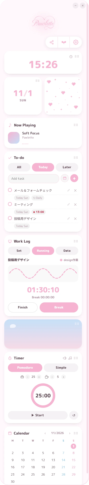
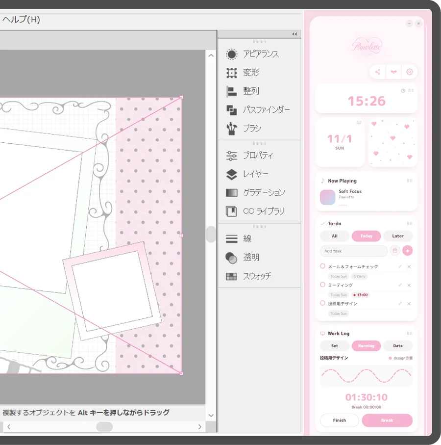
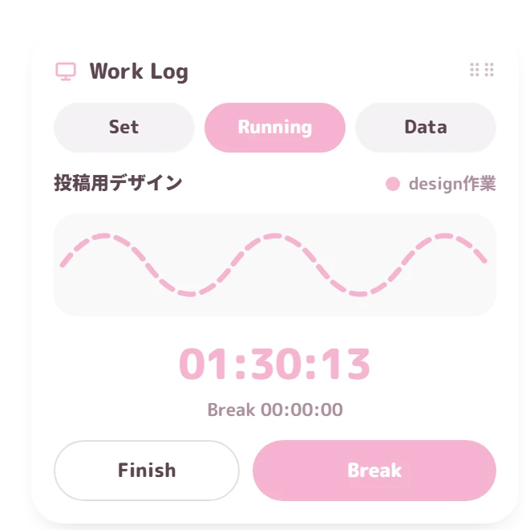
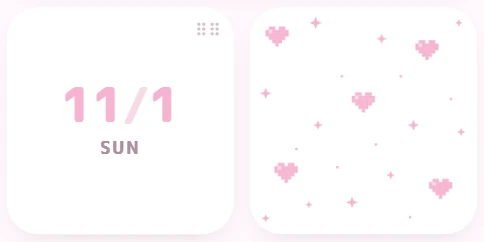
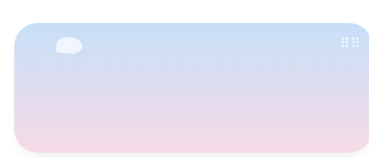
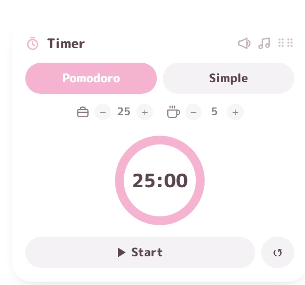
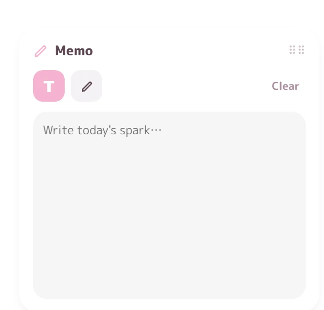

デザイナーがつくった 世界一かわいい 縦型 ウィジェットアプリ
Pawletteは、Windowsのデスクトップに置いて使う縦型のデスクトップウィジェットアプリです。To-do・タイマー・カレンダー・メモなどの小さなウィジェットを、細長いひとつの画面にまとめて表示できます。
デザインソフトやブラウザの横にすっきり並べて、毎日の作業をかわいく見守ります。


※ 画面は利用イメージです。
作業画面の横に置いて
作業をかわいく管理！
こんな方におすすめ
- クリエイターさん
- 学生の方
- 社会人の方
縦に細長いレイアウトなので、横に広く使うソフトと並べても作業スペースをじゃましにくい設計です。やることの確認、作業時間の記録、ちょっとしたメモまで、視線を少し横に動かすだけで確認できます。
機能紹介









着せ替え（Dress-up）、ShareCardなど、そのほかの機能は ABOUT で紹介しています。
ウィジェット紹介
-
To-do
シンプルで使いやすいTo-do
今日のタスクだけでなく、未来のタスクも管理できます。
- All／Today／Laterの3つの表示を切り替え
- タスクに日付・繰り返し（Daily）・時刻を設定
-
Now Playing
作業中の音楽をそっと表示
再生中の曲名やアーティスト名を表示します。
Windowsのメディア再生情報（システムのメディアコントロール）を通じて、再生中の曲名・アーティスト名などを表示します。対応するかどうかは、再生アプリ側がWindowsにその情報を提供しているかによります（特定のアプリでの動作は保証しません）。
動作環境
対応OS
Windows
64bit
Macには対応していません。
Windows 10（バージョン2004以降）または Windows 11 の64bit（x64）版に対応しています。Windows 11を推奨します。ARM版Windowsでの動作は確認していません。
Google Calendar連携について 確認・審査中
PawletteのGoogle Calendar連携は任意の機能です。現在配布中のv1.1.2には含まれていません。次回アップデートでの提供に向けて、Googleの確認・審査を進めており、審査用の候補版では実装しています。一般の利用者への提供時期は、審査の完了後にご案内します。
連携の目的：Pawletteで作った予定をGoogle上のPawlette専用カレンダーに同期することと、ご自身のメイン（primary）カレンダーの予定をPawletteの月間カレンダーに読み取り専用で重ねて表示することです。
連携で扱うデータや保存・削除の方法は、ABOUTのGoogle Calendar連携とプライバシーポリシーでご案内します。